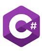

types of programming languages:
links
introduction
There are many programming languages: except that there is a kind of specialization,
where the choice of language depends on the tasks that we want the computer to accomplish,
as each language has what suits it, and there are tasks that are difficult to implement in a specific language but are accessible in another language.
1.JAVA
Java is an object-oriented programming language, invented by James Gosling in 1992 AD - while working in Sun Microsystems
laboratories - to use it as the thinking mind used to operate smart application devices such as interactive television,
and the Java language was a development of C ++, and when it was born it was called Its creator "Awak" meaning oak tree;
It is the tree he saw from his office window working in Sun Microsystems laboratories, then the name changed to Java.
Java has the following characteristics:
A language that adheres to the rules of object-oriented programming, and a language that has its own operating environment.
It has a large and rich ClasseLibrary faction library, and a language based on the rules of the famous C / C ++ language,
and its programs work on all operating systems, as it does not depend on the operating system environment.
Advantages of JAFA:
1.Ease of access.
2.Safe.
3.Transferable and executable.
4.Add motion and sound to web pages.
5.Writing games and utilities.
6.Create programs with a graphical user interface.
disadvantages of JAFA:
1.Quite slow compared to other languages.
2.A large and broad language which requires more time to learn and professional it, this point may be considered an advantage and a disadvantage as well.
3.Get used to fully object-oriented programming and language phrases are somewhat long.
2.C++
It is an object-oriented programming language, multi-programmed, banked, and static.
It includes many features of high-level and low-level programming languages.
The development of this language began as an extension of the C language by Bayern Strostrup in laboratories in 1979 and many
other features were added later and the name was changed in 1983 to become C ++ as a joke by using the increase operator
to the side of the C language name in confirmation that it is "next to the C language".
C ++ is considered one of the most common languages and has been widely used in building operating systems and dealing with the solid structure
of the computer starting from software and user programs, through hardware and embedded device drivers and ending with high performance
servers and entertainment programs such as video games due to its ability to be translated into a highly effective assembly language code .
Advantages of C++:
1.A very powerful language used in most modern operating systems.
2.Supports many types of programming, in addition to object-oriented programming.
3.Many consider it the ideal language for large and complex projects.
4.It is characterized by great speed during execution time.
disadvantages of C++:
1.Relatively difficult for beginners because of its difficulty Syntax.
2.The programmer does not provide much help and does not possess libraries with the power of other libraries, such as the Java language.
3.There are no virtual libraries to design the graphic interfaces.
3.C#

It is a multi-mode programming language that enjoys being static, command, definitive, functional, procedural, general, and object-oriented.
It is also subject to principles of structured programming.
C-Sharp is a NET environment. It is developed by the American software company Microsoft.
This language supports the Zodiac as well as other constellation systems. The C Sharp combines the power of the C Plus Plus with the ease of Visual Basic.
Also, the language code, which is very similar to the language of Java, was intended to attract Java programmers to this language.
Advantages of C#:
1.Strong language, yet easy to learn, and its fast-developing software.
2.Supports object-oriented programming.
3.Use in the field of the web.
disadvantages of C#:
1.It only works in the Windows environment, although projects like the Mono environment have emerged, but remain informal solutions.
2.Many consider it a mere imitation of the Java language, and Microsoft came out of it with the Sun no more.